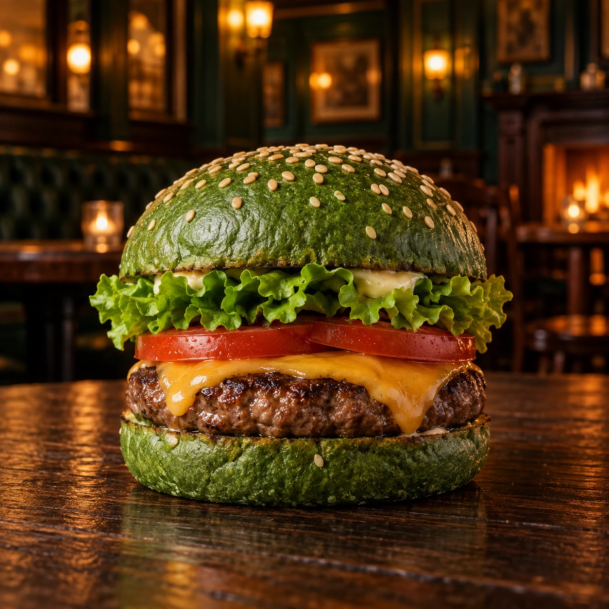
Hambúrguer verde
Uma edição especial para entrar no clima.
HOLY WATER CERVEJARIA APRESENTA
Sete dias. Bons amigos. Copo cheio.
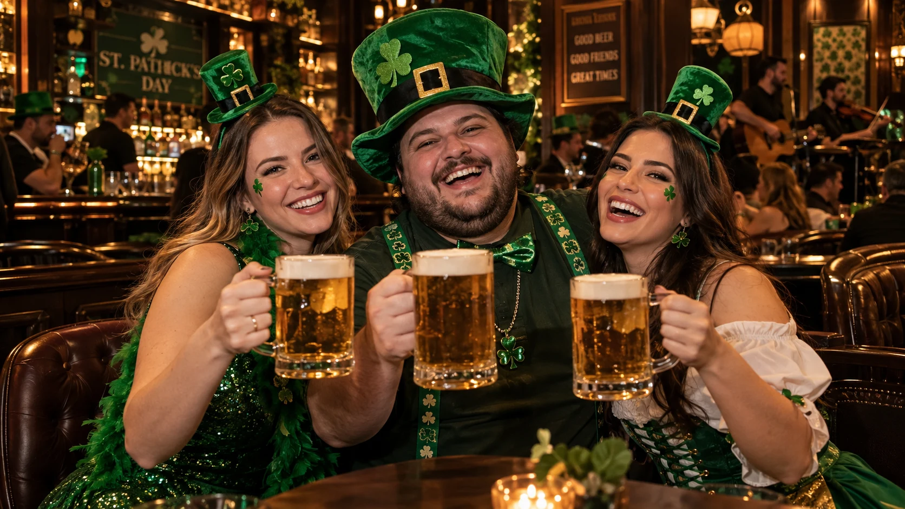
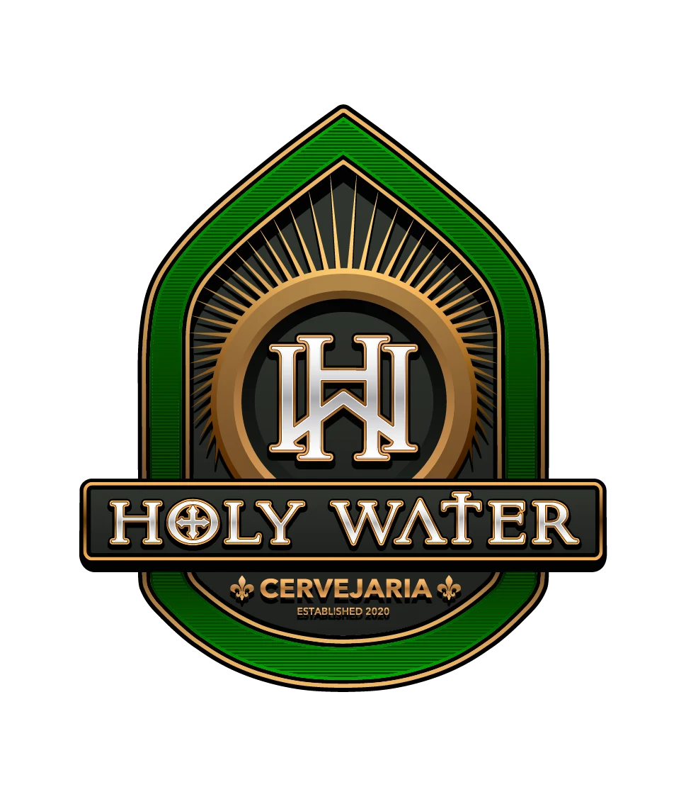
ENCONTRE A FESTAJundiaíShoppingA PARTIR DAS 19HO SOM DA NOSSA SEMANA
O palco da Semana Saint Patrick não para.
Reúna os amigos e venha curtir essa experiência.
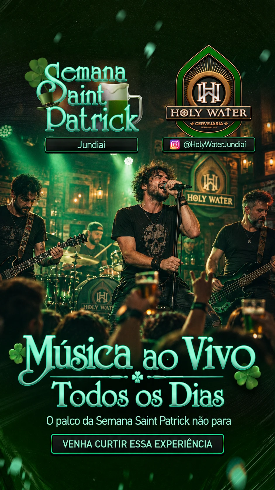
AGENDA DE SHOWS
ENTRE NO CLIMA
Burger, drinks e cerveja verde. O sabor Saint Patrick em um só lugar, de 17 a 23 de março.

Uma edição especial para entrar no clima.
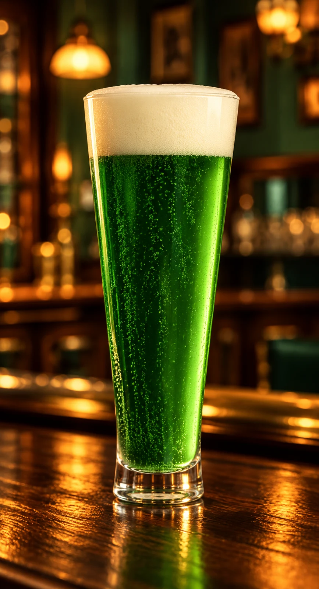
Seu brinde ganha a cor da celebração.
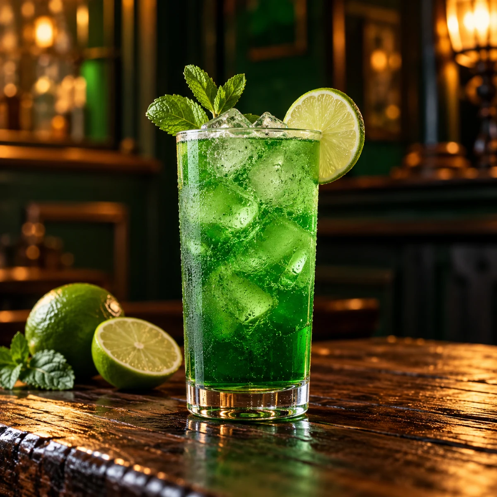
Mais cor para os encontros no pub.
TRADIÇÃO DE PUB. VONTADE DE FICAR.
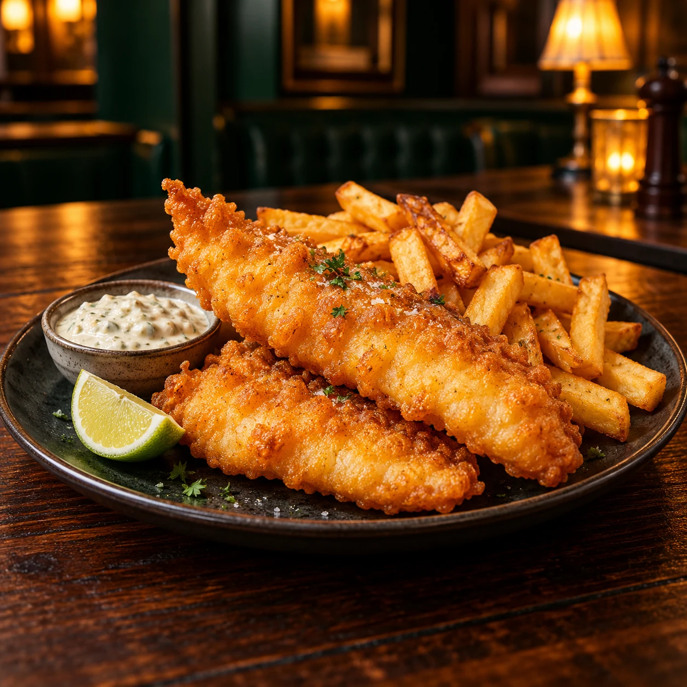
Crocância, sabor e tradição em um clássico de pub.
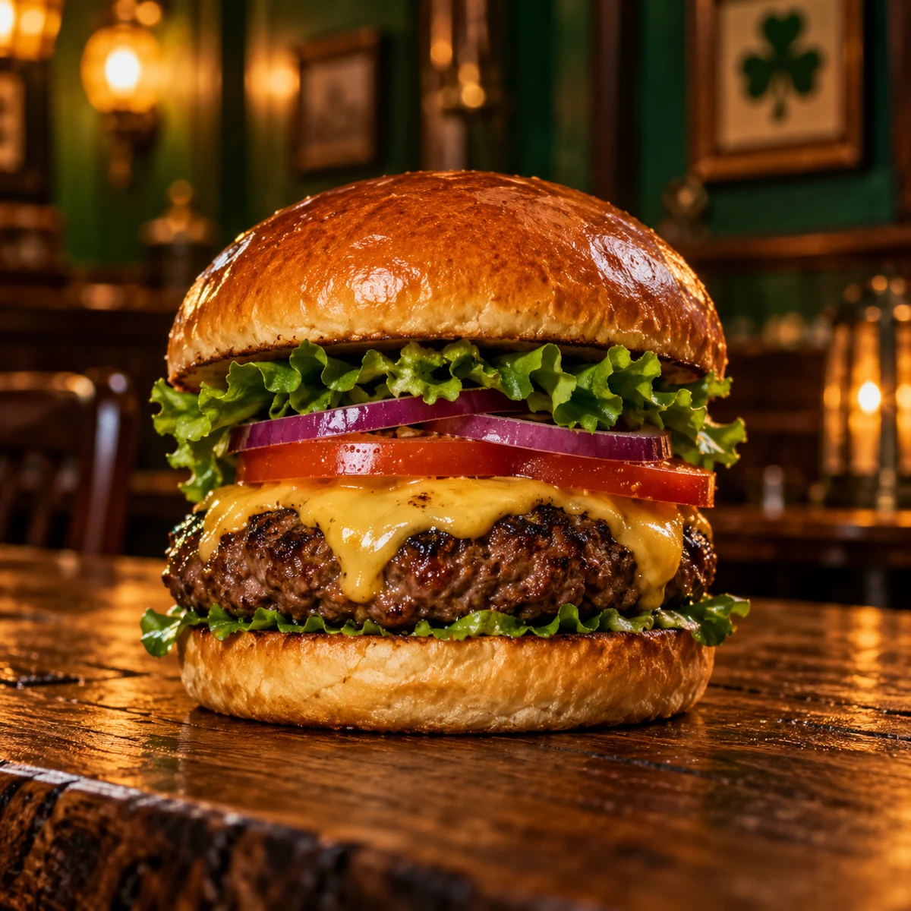
Um burger com presença para acompanhar o seu brinde.
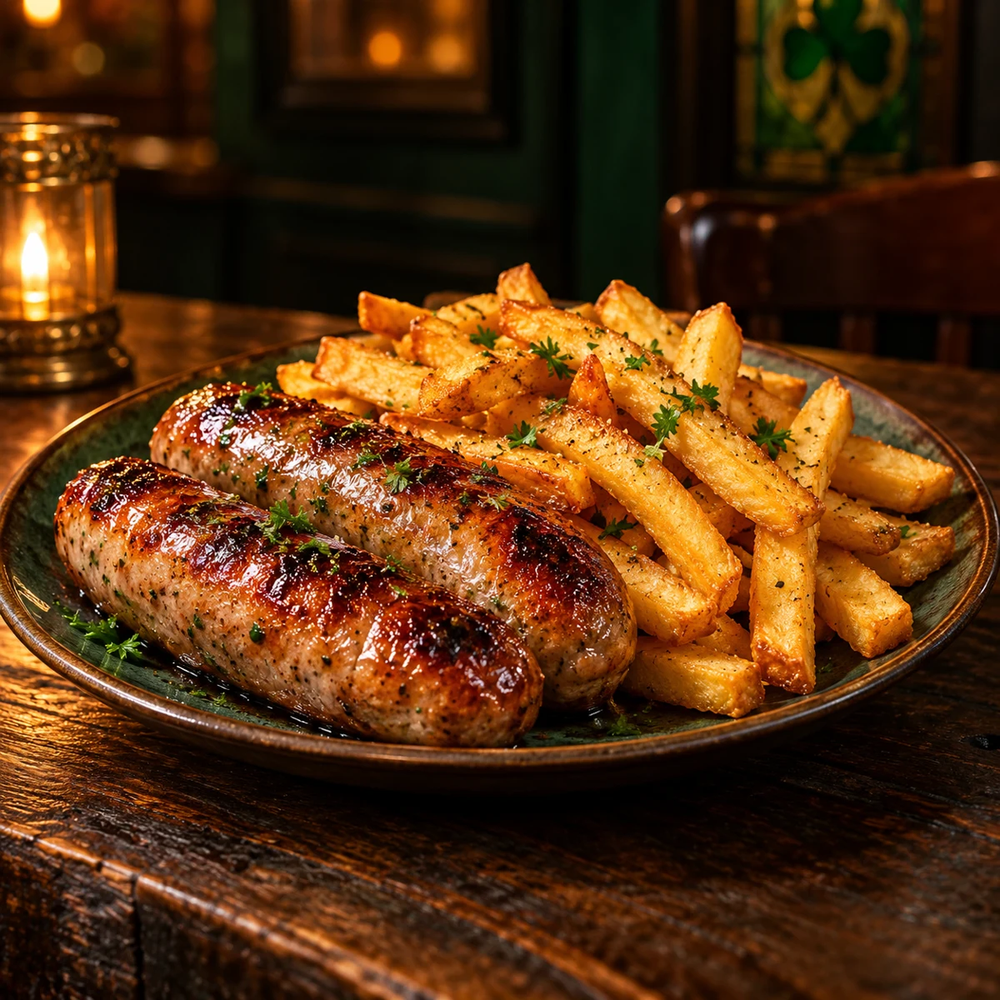
A combinação de pub que pede boa companhia.
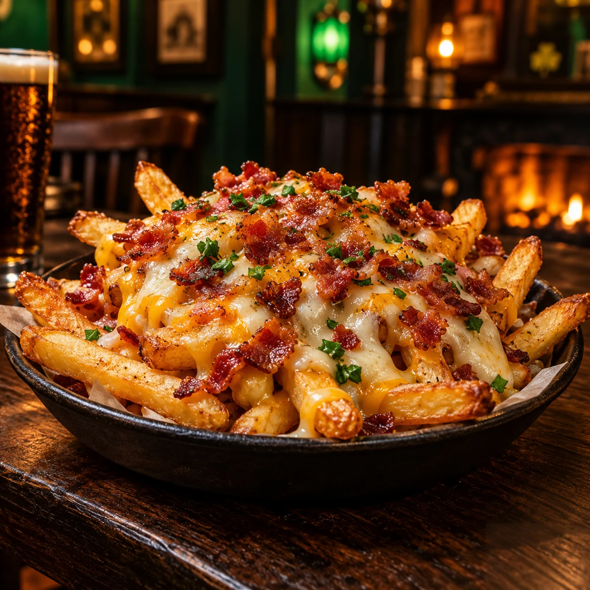
Fritas caprichadas para compartilhar entre amigos.
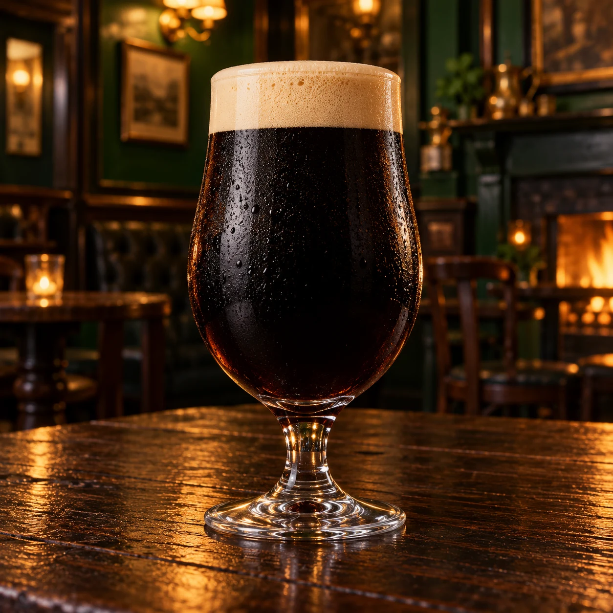
UM BRINDE COM ALMA IRLANDESA
Intensa, cremosa e com alma irlandesa.
Venha brindar com a gente ↗A SORTE ESTÁ LÁ NO BAR
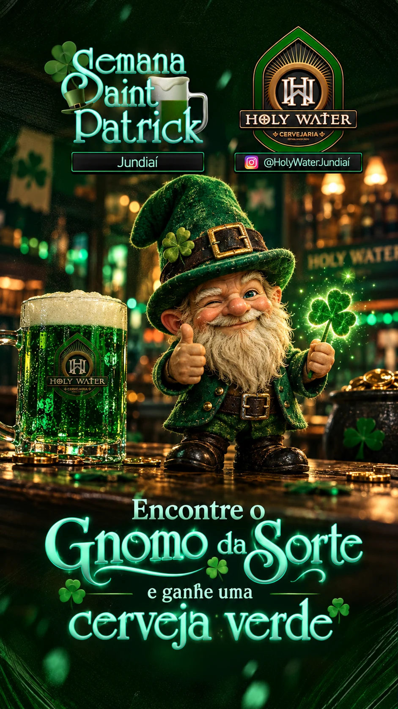
Ele estará escondido na Holy Water. Encontre e ganhe uma cerveja verde para brindar.
SEU PRÓXIMO BRINDE COMEÇA AQUI
De 17 a 23 de março · A partir das 19h
Holy Water Cervejaria · JundiaíShopping
Av. Nove de Julho, 3333 — Anhangabaú
JundiaíShopping · Jundiaí